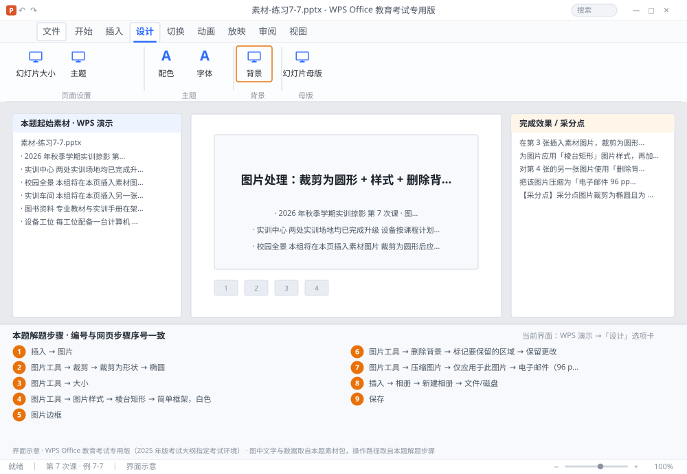

完成比对文档 · 例 7-7
图片处理：裁剪为圆形 + 样式 + 删除背景 + 压缩 + 相册 ｜ 第 7 次课 / WPS 演示 ｜ 网页：实操-演示1.html ｜ 考试环境：WPS Office 教育考试专用版（2025 年版考试大纲指定考试环境）
用途 本页按修订后的题目要求与解题步骤生成，是交卷自查的结果基准：
逐项列出每一步应出现的可复核结果，配合模拟操作截图与解题结果文件使用。
它不是素材包的一部分，不会预置答案动作；起始素材仍从本题素材包下载。
一、本题起始素材包
目录：练习素材/练习7-7-图片处理与相册/ ｜
下载包：练习素材/下载/练习7-7-图片处理与相册.zip
素材-练习7-7.pptx图1-校园全景.png图2-实训车间.png图3-图书馆.png素材说明.txt
二、题目要求
- 在第 3 张插入素材图片，裁剪为圆形，直径约 4 厘米。
- 为图片应用「棱台矩形」图片样式，再加 1 磅白色边框。
- 对第 4 张的另一张图片使用「删除背景」，保留主体、删除杂乱背景。
- 把该图片压缩为「电子邮件 96 ppi」。
- 新建一个「相册」，包含素材文件夹中的 3 张图片，每页 2 张。
- 保存为 学号-姓名-练习7-7.pptx。
三、解题步骤（编号与下方核对表、截图编号一致）
- 插图片。选中第 3 张 →「插入」→「图片」→ 选素材图 → 插入。
- 裁剪为形状。选中图片 →「图片工具」→「裁剪」下拉 →「裁剪为形状」→ 选「椭圆」。再「裁剪」→「纵横比 1:1」，使其成为正圆。
- 设尺寸。「图片工具」→ 在「大小」里把高度设为 4 厘米（宽度会自动变 4，因为已 1:1）。
- 图片样式。「图片工具」→「图片样式」库 → 选「棱台矩形」（或「简单框架，白色」）。
- 加边框。「图片边框」→ 颜色白、粗细 1 磅。
- 删除背景。选中第 4 张的图片 →「图片工具」→「删除背景」→ 紫色区域为将被删除部分 → 用「标记要保留的区域」在主体上划线 →「保留更改」。
- 压缩图片。「图片工具」→「压缩图片」→ 取消「仅应用于此图片」（若需全部）→ 选「电子邮件（96 ppi）」→ 确定。
- 做相册。「插入」→「相册」→「新建相册」→「文件/磁盘」→ 选 3 张图 → 在「图片版式」里选「2 张图片」→ 创建。相册会新建一个演示文稿，需另存为指定文件名。
- 保存。相册文件另存为 学号-姓名-练习7-7.pptx；原文件也保存一次。
四、完成效果 / 采分点
采分点图片裁剪为椭圆且为 1:1 正圆、约 4 厘米 · 已应用棱台矩形样式 + 1 磅白色边框 · 另一张图已执行删除背景且主体完整 · 压缩为 96 ppi · 相册含 3 张图、每页 2 张
五、逐项完成核对表
| 步骤 | 关键操作路径 | 应出现的结果（可复核） |
|---|
| 1 | 插图片 | 3 张、「插入」、「图片」 |
| 2 | 裁剪为形状 | 「图片工具」、「裁剪」、「裁剪为形状」、「椭圆」、「纵横比 1:1」 |
| 3 | 设尺寸 | 「图片工具」、「大小」、4 厘米 |
| 4 | 图片样式 | 「图片工具」、「图片样式」、「棱台矩形」、「简单框架，白色」 |
| 5 | 加边框 | 「图片边框」、1 磅 |
| 6 | 删除背景 | 4 张、「图片工具」、「删除背景」、「标记要保留的区域」、「保留更改」 |
| 7 | 压缩图片 | 「图片工具」、「压缩图片」、「仅应用于此图片」、「电子邮件（96 ppi）」 |
| 8 | 做相册 | 「插入」、「相册」、「新建相册」、「文件/磁盘」、3 张 |
| 9 | 保存 | 学号-姓名-练习7-7.pptx |
六、模拟操作截图

界面示意 · WPS Office 教育考试专用版 · 橙色编号与本题解题步骤序号一致；
图中文字与数据取自本题素材包，功能入口取自本题解题步骤。
核对方法：按网页解题步骤完成并另存自己的成稿后，逐行比对本表第 3 列的
参数、公式、区域、文件名与对象数量；再对照网页「完成效果 / 采分点」检查版式是否一致。